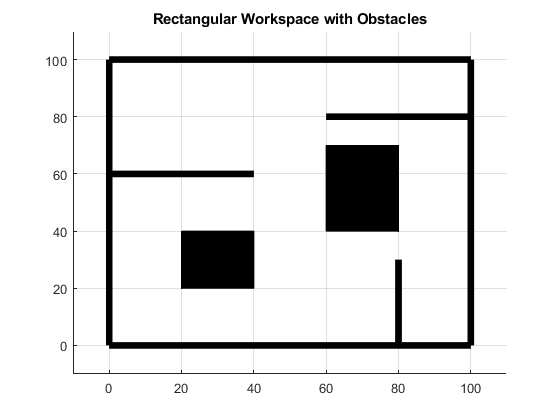
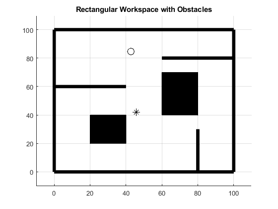

Contents
%Mohammed sohaib Assignment 3 Potential field method to find a path % from a start point to a goal point in a 2D workspace with obstacles clear; clc;
1. Generate a workspace which has a room with walls and passage ways .
we create the walls of the workspace
line([0,0],[0,100],'LineWidth',5,'Color','k'); %left wall line([0,100],[0,0],'LineWidth',5,'Color','k'); %Bottom wall line([100,100],[0,100],'LineWidth',5,'Color','k'); %Right wall line([0,100],[100,100],'Linewidth',5,'Color','k'); %top wall line([0,40],[60,60],'Linewidth',5,'Color','k'); %one of the wall line([80,80],[0,30],'LineWidth',5,'Color','k'); line([60,100],[80,80],'LineWidth',5,'Color','k'); % Creat the obstacles in the workspace rectangle('Position',[20,20,20,20],'FaceColor','k','EdgeColor','k'); %Obstacle 1 rectangle('Position',[60,40,20,30],'FaceColor','k','EdgeColor','k'); %Obstacle 2 xlim([-10,110]); ylim([-10,110]); grid on title('Rectangular Workspace with Obstacles')
2. Mark the start point and the goal point in the workspace.
disp('INPUT'); [start_x, start_y] = ginput(1); disp('OUTPUT'); [end_x, end_y] = ginput(1); %now plot the start and end points hold on plot(start_x,start_y,'ko','MarkerSize',10); plot(end_x,end_y,'k*','MarkerSize',10);
INPUT OUTPUT